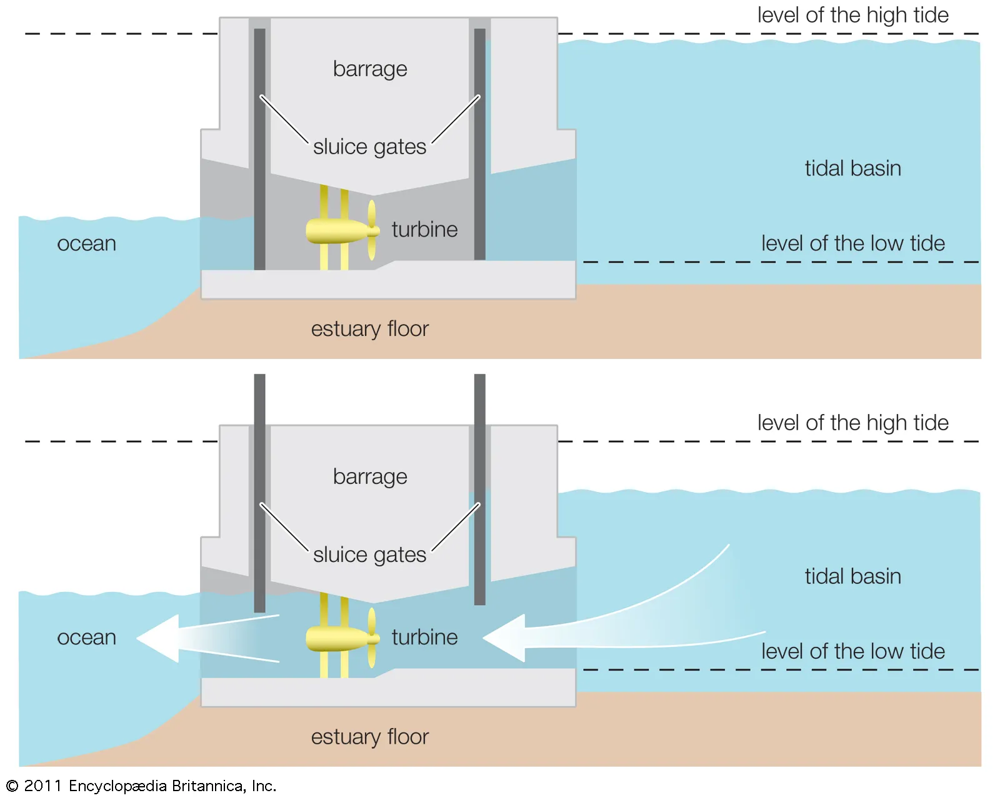

Activity 1: Tidal Energy Conversion System

Tidal energy is a renewable source harnessed from the periodic rise and fall of ocean tides caused by the gravitational interaction between the Earth, Moon, and Sun. The image above depicts a typical tidal barrage system, where a dam (barrage) is constructed across an estuary or tidal basin. During high tide, sluice gates allow seawater to enter the basin, and when the tide recedes, the stored water is released through turbines to generate electricity. The turbines can work in both directions—during inflow and outflow—improving overall efficiency.
Working Principle: The potential energy difference between high and low tides drives the turbines. The kinetic energy of the moving water is converted into mechanical energy by the turbine and then into electrical energy through a generator. The process is entirely clean and emits no greenhouse gases.
Advantages: Predictable energy generation, zero fuel cost, and long operational life.
Disadvantages: High initial construction cost, environmental impact on marine ecosystems, and location dependency.
Site Selection Criteria: Sites with a high tidal range (at least 5 meters), narrow estuaries, and minimal environmental disturbance are ideal. Examples include the Rance Estuary (France) and Sihwa Lake (South Korea).
Applications: Powering coastal communities, desalination plants, and supporting hybrid renewable energy systems. Tidal energy contributes to sustainable coastal electrification by providing consistent and renewable power.